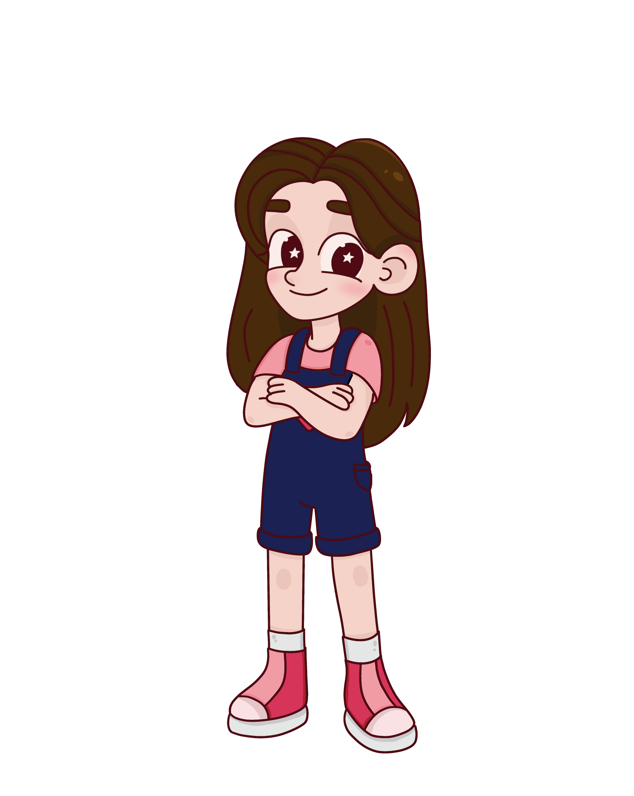

¿Quiénes somos?
Píchiris nace como un proyecto de tesis de Valeria Cobos, con el sueño de visibilizar la discapacidad en perritos callejeros a través de la animación, el arte y la imaginación.

Chiris
Un perrito callejero con una discapacidad motriz que ve el mundo con imaginación y alegría. Usa un carrito improvisado hecho con objetos de la calle. Su actitud es positiva, valiente y soñadora.

Annie
Una preadolescente curiosa, creativa, con un gran corazón. Encuentra a Chiris camino a casa y decide acompañarlo en sus aventuras, cada dia camino a casa es una aventura nueva,